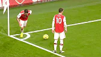

Contributing to Open Source Part I: The Easy Way
The Odin Project
1.11K subscribers
491
Like
I don't like this
69,563 views Feb 28, 2014
How do you contribute to open source? In this video, I'll describe the easiest way to make a simple contribution to an open source project -- without using the command line, a text editor, "forking a repo", or even touching Git outside of Github. I'll also describe what kinds of contributions open source software projects are typically looking for. As an example, I use submitting a student solution to a web development exercise from The Odin Project, a free online curriculum for learning web development with Ruby on Rails. You can find more information about that project at http://theodinproject.com.
How do you contribute to open source? In this video, I'll describe the easiest way to make a simple contribution to an open source project -- without using the command line, a text editor, "forking a repo", or even touching Git outside of Github. I'll also describe what kinds of contributions open source software projects are typically looking for. As an example, I use submitting a student solution to a web development exercise from The Odin Project, a free online curriculum for learning web development with Ruby on Rails. You can find more information about that project at http://theodinproject.com.
ONE-ON-ONE CHAT WITH RHODES-VIVOUR
Channels Television
222k views
•
3 days ago
'PDP Is Involved In The Naira Scarcity We're Facing'
~ Ayodele Fayose Blows Hot
~ Ayodele Fayose Blows Hot
TVC
71k views
•
8 days ago
Python Tutorial - Python Full Course for Beginners
Programming with Mosh
32M views
•
4 years ago
Github for Noobs (2/4) - Common workflows
DevTips
114k views
•
7 years ago

Mesut Ozil: Top 10 Ridiculous Things No One Expected
ArsenalVideosHD
3.4M views
•
2 years ago
After This Election, PDP Would Be Dead and Buried; Peter Obi...
SaharaTV
82k views
•
12 days ago
Ethnic Bigotry, Thuggery are Highly Condemnable - Babaj...
Arise News
128k views
•
5 days ago
The Return of Sadio Mane
FC bayern Munich
1.4M views
•
9 days ago
ChatGPT Tutorial - A crash Course on Chat GPT for...
Adrian Twarog
4.2M views
•
3 months ago
The Morning Show: 'Bola Tinubu's Election Stands' -...
Arise News
99k views
•
3 days ago

THIS IS WHAT WILL HAPPEN IN THE SUPREME COURT - ...
KINGDOM MEDIA HUB
428k views
•
9 days ago